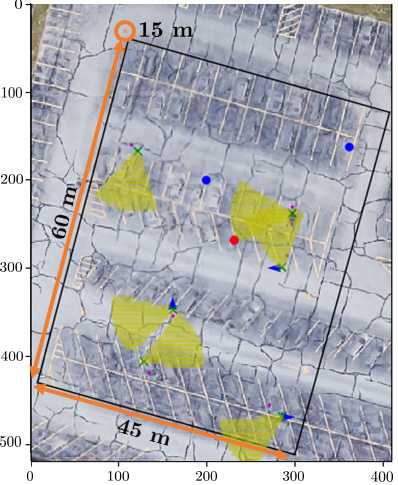
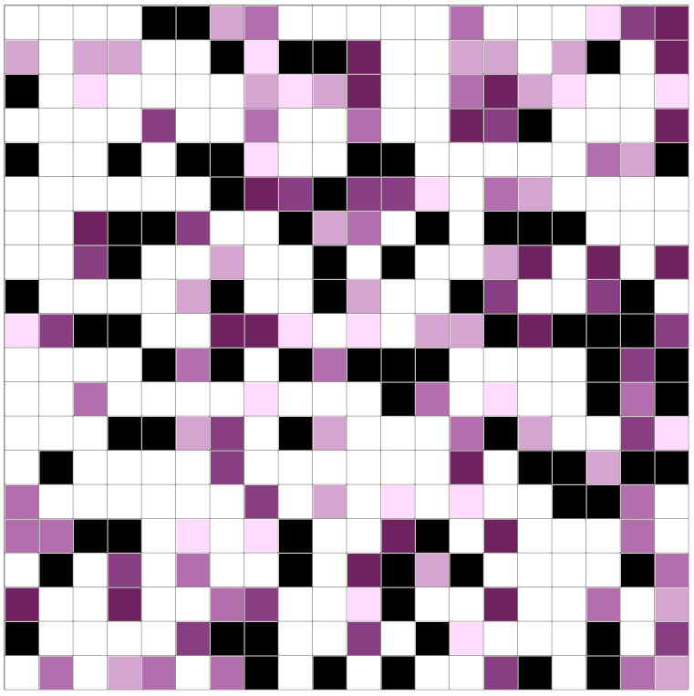

Overview
My research lies at the intersection of reinforcement learning, multi-agent systems, and robotics, with a growing emphasis on large language models (LLMs) and their integration with autonomous and multi-agent systems. I am interested in designing intelligent agents that can reason, coordinate, and act effectively in complex, uncertain, and dynamic environments.
Decentralized Multi-Agent Learning for Aerial Search
In my postdoctoral work, I developed a fully decentralized multi-agent learning method based on policy gradients for the task of multi-target search and detection by a team of autonomous drones (Yehoshua et al., 2021). In this setting, a group of drones is tasked with locating a set of targets with unknown positions within a designated area. Each drone is equipped with a camera for local sensing and a GPS receiver for approximate localization. Due to limited battery capacity, it is crucial for the team to find all targets as quickly as possible. To succeed, the drones must not only explore efficiently but also learn to coordinate their movements and avoid redundant coverage of previously searched areas.

To solve this problem, I collaborated with researchers from the Department of Mechanical and Industrial Engineering to build a realistic drone simulator. The simulator faithfully reproduces the dynamics and noise characteristics of real drones by incorporating statistical models learned from experimental flight data. Using this simulator, we trained our reinforcement learning algorithm, which produced near-optimal policies in a short amount of training time. The learned policies enabled the drones to stay within the designated search area while minimizing overlap in their exploration paths.
Adversarial Robotic Coverage
My PhD research addressed a fundamental problem in robotics: the robotic coverage problem, where a robot needs to cover every point in a target area. This problem has many real-world applications ranging from house cleaning to demining, agricultural monitoring, and search-and-rescue.
I extended this classical problem by introducing an adversarial model, in which the environment contains threats that can stop the robot, requiring new strategies that explicitly balance efficiency and risk. This problem requires balancing two conflicting goals: minimizing total coverage time while maximizing the safety of the robot.

I proposed a suite of algorithms for different variations of the adversarial coverage problem: (1) an offline variant with a known threat map; (2) an online version relying on real-time sensing to detect threats; and (3) a multi-agent setting with coordinated teams of robots. These methods were validated both in simulation and on real robotic platforms, and I provided theoretical guarantees on the resulting coverage time and accumulated risk. Additionally, I explored the adversary’s perspective, studying how threats can be strategically placed to prevent coverage—a problem known as coverage defending, with applications in surveillance and security.
In the process of addressing these challenges, I also developed a novel algorithm for solving Markov Decision Processes, Frontier-Based Real-Time Dynamic Programming (FB-RTDP). This technique significantly improved convergence speed compared to existing solvers, enabling fast and scalable planning under uncertainty. My research was published in top-tier venues including IJRR, JAAMAS, and conferences such as AAMAS, ECAI, and IROS.
Effects of Lifetime Learning on Population Fitness
In my Master's thesis, I studied the impact of lifetime learning on evolutionary search processes through the lens of the Vose dynamical systems model of genetic algorithms. Classical genetic algorithms are typically analyzed in terms of population-level evolution, but they do not explicitly capture how individual learning within a lifetime affects the long-term behavior of the population. In this work, I extended the traditional Vose model by integrating an additional learning operator that models the effects of lifetime learning—both Darwinian and Lamarckian—on the population vector. This extension enables a theoretical examination of how individual learning mechanisms influence the expected population fitness over time.
The extended framework allowed us to analyze hybrid evolutionary algorithms where learning and genetic variation interact. Using the infinite-population Vose model, we compared the asymptotic behavior of such hybrid strategies to that of the classical Simple Genetic Algorithm (SGA). Our results demonstrated that algorithms incorporating Lamarckian-like inheritance—where learned improvements are directly passed to offspring—can exhibit faster adaptation compared to non-learning baselines. Interestingly, we also observed that Darwinian learning effects can, in some problem instances, lead to more robust convergence toward global optima, highlighting nuanced tradeoffs between learning mechanisms in evolutionary search. Overall, this work provided a rigorous mathematical framework to quantify and reason about the influence of lifetime learning on evolutionary performance. It contributed to the theoretical understanding of hybrid genetic algorithms and offered insights into how individual-level learning can shape population-level fitness over evolutionary timescales. This research was published in the proceedings of the 12th Annual Genetic and Evolutionary Computation Conference (GECCO ’10), a premier venue for evolutionary computation research.